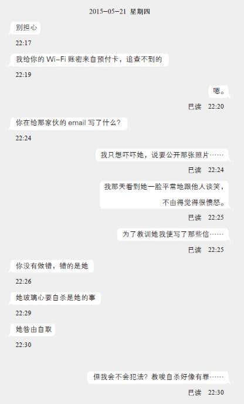

第四章
1
“所有人给我听好！明天一律穿正装上班！今天下班前将自己的桌子清干净，把与工作无关的私人物件全部收好！还有，那些写真偶像、制服美女、AV女优的桌布全给我换掉，假如我明天上午检查时看到有什么会损害公司形象的，扣薪水五百！”
在“GT网”的办公室内，李老板接过一通电话后，紧张地向部下喊道。虽然他一脸张皇，但各人都看出他表情中那丝亢奋。
“老板，怎么了？”阿豪问道。
“明天有VC来参观！有新加入生产力局计划的外国VC对我们有兴趣，可能会注资！”李老板大嚷。施仲南和马仔也暂停手上的编程工作，转身望向老板。
“这世上真的有傻瓜耶。”马仔小声地向施仲南说。
“哪家外国VC？”施仲南向老板问道。
“你们听到别吓一跳——是美国的SIQ！”
施仲南、阿豪和Joanne闻言跳起，可是马仔和设计师Thomas没有反应。
“南哥，SIQ是很有名的公司吗？”马仔问。
“Thomas是平面设计师，他不知道情有可原，但你好歹是个工程师，拜托你给我多留意一下业界新闻吧！”施仲南坐下后，对马仔苦笑着说，“SIQ是美国数一数二专门投资网路科技企业的创投基金，跟安德森·霍罗威兹 [1] 齐名——”
“安德森什么的又是什么？”
施仲南觉得自己对牛弹琴，于是干脆回答一句“总之是很富有很有眼光的投资基金公司”。事实上，他理解老板紧张的原因——SIQ派员参观，可说是千载难逢的机会。SIQ全名是SIQ Ventures，而公司名字的三个英文字母，分别代表三位创办人：司徒玮（Szeto Wai）、井上聪（Inoue Satoshi）和凯尔·昆西（Kyle Quincy）。1994年左右，仍在洛杉矶加州大学念书的日裔电脑天才井上聪发明了崭新的图像压缩演算法，令电脑在有限频宽下能够传输更多图像，改革了网路的发展方向。他跟同校的司徒玮在硅谷成立了软件公司“同位素科技”（Isotope Technologies），研究图像、影片与音讯的演算法与软件开发，其后更涉足无线通信的加密技术，公司拥有数百项专利。通过司徒玮高明的商业手腕，同位素科技的专利技术应用于各间大型的软硬件企业产品之中，这令井上和司徒两人不到三十岁便跻身硅谷最具影响力科技人才之列，亦令他们获取上亿元的利润。2005年，井上和司徒伙拍美国企业家凯尔·昆西，建立创投公司SIQ，投资支持中小型的创新科技企业。就像另一家著名的创投公司安德森·霍罗威兹投资推特和脸书获得巨额回报的例子，SIQ在几年之间，从最初的四亿美元资本急促成长至接近三十亿。
对李老板来说，GT网固然不可能跟从事科研的同位素科技相提并论，但他的确有不切实际的幻想，期望自己能像井上或司徒那样子，攫取巨大的财富与名声。施仲南多少有察觉老板的奢望，而他对此嗤之以鼻，毕竟四十多岁才卖掉祖业、从纺织厂换跑道到网路事业的家伙，的确没可能成为科技新贵。事实上，施仲南自己也有野心，希望能创办属于自己的公司，成为下一位马云或赖利·佩吉 [2] 。
“至少我是科班出身，跟李世荣这种败家子不一样。”施仲南想。
施仲南毕业后辗转在小公司上班，目的就是以小博大。以他在大学的成绩，他其实够资格到大企业谋事，可是他很清楚自己的弱点，知道在大企业工作，获上司青睐提拔的机会微薄，他不愿意默默拼搏十数载、人到中年才稍尝成功的滋味。在员工不到十人的小公司工作，除了较容易巴结老板外，亦有更多出人头地的机会。
就像眼下的情况，他有机会跟SIQ的要员见面。
他无意协助他看不顺眼的李老板说服SIQ投资，但为了自己，他一样全力以赴。假如能令SIQ的高级干部留下良好印象，说不定他日有机会合作，获得一笔丰厚的创业资本。他曾听说，某本地的创投基金干部跟一位企业创办人喝了一次咖啡，便决定投资数百万美元。在科技业界，投资者往往愿意押注在人才或概念上，只要能让对方认同能力，穷小子也有可能摇身一变，成为下一位天之骄子。施仲南觉得，这就是他一直等待的机遇。
“嘿，老板居然会被SIQ相中。大概世上有些人天生好运，就算败了死鬼老爸整间工厂，只要随便伸手，一样能莫名其妙地接到天降横财。”下班时，阿豪在升降机里跟施仲南说，“马仔九成又会说什么积阴德所以好人有好报吧。”
施仲南从不相信因果报应。多年来，他看过心术不正的人耍手段尽得渔利，见过温驯的家伙蒙冤受屈被欺压。虽然没有宣之于口，施仲南鄙视软弱的家伙，只是社会强迫每个人当“好人”，他才无奈接受。他很清楚社会规条的虚伪，官员、富商满嘴仁义道德，不过是用来掩饰自己真实一面的烟幕，法律只是用来压榨平民、让既得利益者受惠的工具。比起什么“积阴德”，施仲南更相信人要靠自己——假如世上真的有业报，他早该尝到苦果，但现实就是比他干过更多坏事的人也能平步青云，他自然可以理直气壮地认定“人不为己，天诛地灭”才是硬道理。
翌日早上9点，GT网的一众员工已准备就绪，在办公室等候贵宾到访——即使李老板知道访客会在11点后才来临。公司一向采用弹性上下班时间制度，施仲南不时在早上8点多便会到公司，相反阿豪和Thomas习惯10点后才上班，今天在李老板一声令下，他们只能提早回来。
平日衣着随便的Thomas今天穿上不称身的西装，不时用手指调整领口好让自己透透气，而Joanne则穿上白色衬衫和黑色西服套裙，跟平时一味展现青春亮丽的韩风OL穿搭截然不同。施仲南倒没有特别换装，因为他每天都穿衬衫上班，今天只加上了领带和外套。虽然李老板向来容许员工穿便装上班，施仲南觉得自己好歹是个软件工程师，上班就该有工程师的模样。他认为一个人的日常衣着像宅男，就会一辈子当没出息的宅男。
“南哥，我的英文不好，万一SIQ的人问我问题，你一定要帮忙啊。”平日穿得像宅男的马仔一脸忐忑地说。马仔投身职场不过两年，就像不少念电脑的理科生，他的文科成绩一向平平，英语会话更是弱项。
“你别担心，对方如果问及技术问题我会全部代答。”施仲南表现出一副可靠的前辈姿态，马仔连忙点头称好。马仔完全没想到施仲南心里想的是另一回事——跟SIQ人员对谈的机会，施仲南压根儿没想过拱手相让给后辈。纵使二人在公司的职级相若，施仲南从来没视马仔为搭档，对他来说，马仔只是办公室里一件工具而已。万一工作上出了什么差错，施仲南知道自己会反面无情地令马仔背黑锅、当替罪羊。当然，他不会将这想法表露出来。
接下来的两个钟头里，办公室一片死寂，跟平日涣散的气氛大相径庭，众人精神紧绷，没有人有心情跟旁边的人说半句闲话。施仲南也无心工作，他虽然打开了编写程序的工具，眼角却一直瞄着屏幕角落的小时钟，数着距离11点的每分每秒。
“叮咚。”
门铃响起的瞬间，办公室内众人都不禁正襟危坐，李老板更紧张得从座椅上站起来。Joanne看到老板的举动，立即离开座位往大门走过去——她很清楚即使公司再小，也不能让老板亲自开门迎接，否则便显得太寒酸了。
施仲南、马仔和阿豪等人双眼没离开自己的电脑屏幕，但都竖起耳朵，留意着大门那边的动静。他们听到Joanne用英文跟访客打招呼，不过接下来却是广东话的回答。
“我们约了李世荣先生11点见面。”一把清脆的女声说道。
“这、这边。”Joanne也换回广东话。
访客踏进办公室后，施仲南忍不住转头一窥究竟。来访者有两位，在前方跟Joanne走在一起的是一位身材娇小、相貌出众的棕发女性，看样子不到三十岁，五官同时带着东方人与西方人的特征，大概是一位混血儿。她和Joanne一样穿着整齐的套装，不过她没穿裙子，下半身是一条黑色的西裤，给人一种精明干练的感觉。她没有提公事包，只拿着一台灰黑色的iPad，这让她更显得利落。因为对方是美女，施仲南不由得多瞧几眼，可是当他将目光移到她身后的男人时，这男人比美女更抓住他的视线。
那男人看起来比施仲南年长十岁左右，身穿一套灰色的西装，黑色领带配衬着白色的袋巾，散发着年轻才俊的气息。他鼻梁上架着一副无框眼镜，眼神带着自信，加上那双剑眉跟清爽自然的发型，令人想起电影《漂亮女人》的理查·基尔——或者该说，是“亚洲版”的理查·基尔。这男人拥有黄皮肤和黑色头发，是位亚洲人。
然而施仲南无法移开目光的原因，不是因为对方帅气。他觉得这男人的样子有点面善。
“你们好，我是GT Technology的Richard Lee.”李老板离开座位，趋前迎接，跟那对俊男美女握手。
“您好，”混血美女先开口，伸手摆出介绍身边人的手势，“这位是SIQ Ventures的司徒玮。”
李老板闻言，下巴差点掉到地上，而施仲南更是整个人几乎从座位跳起。这时候施仲南终于理解为什么他对那男人有印象——他曾在外国的科技新闻网站见过对方的旧照片。井上聪和司徒玮二人近年甚少曝光，SIQ开记者会都由凯尔·昆西亮相，但十多年前同位素科技发迹时，他们也有接受硅谷一些媒体访问，他们的照片更是业界趣谈——井上永远是一副随兴的书呆子形象，老穿短裤和T恤，但年纪差不多的司徒却打扮得老气横秋，西装笔挺。两人合照，就像商人老爸带着念高中的儿子，当中落差之大，引人发噱。
施仲南仔细打量司徒玮的外貌，确认对方就是记忆里的相中人。他可没想过，SIQ居然会派董事会的第二号人物，来跟这间只有五名员工的小公司的老板见面。
“司、司徒先生，幸、幸会。”李老板结结巴巴地用英语说道。因为紧张的关系，他将“Nice to meet you”说成“Nite to miss you”.
“跟我说广东话便可以了。”司徒玮说，虽然口音有点不纯正，但每个字都说得很清楚，“我父母是香港人，我小时候在香港念过小学，没有忘掉广东话。”
“啊、啊，幸会幸会，久仰久仰。”李老板词不达意，战战兢兢地跟对方交换名片，“司徒先生……是SIQ创办人那位司徒先生吗？”
“正是，上面写的职衔可不是假话。”司徒玮微微一笑，指了指名片，“不过我每次参观公司时，对方都会问我这个问题。”
“请、请恕我冒昧。”李老板被这位贵宾杀个措手不及，本来准备好的阿谀之词也说不出半句，“我没想到大名鼎鼎的司徒先生会纡尊降贵，大驾光临我们这家小公司。”
施仲南心想，李老板这时就像古代的九品芝麻官拜见朝廷一品大员一样，哈腰欠身，抓破脑袋挖出一切能运用的奉承词语，委实难看得很。
“只是碰巧而已，我刚好来港度假探望朋友。这几年业务都交给凯尔，我已移居东岸，平时顶多跟他们开一些简短的视像会议。不过这种半退休的生活也太苦闷，所以偶然碰上有趣的案子，我会亲自处理……”司徒玮笑道，“在网路时代，公司规模和潜力不一定成正比，当初我跟井上创办同位素时，也不过只有四个人罢了。有时小公司的营利能力比大公司更惊人，事实上，比起那些有数百名员工的企业，我对职员不到十人的公司更感兴趣。人才是贵精不贵多的。”
“啊，那真是敝公司的荣幸。我们先进会议室，让我介绍一下敝公司的业务和前景？”李老板扬扬手，示意两位访客跟随他。
在司徒玮和李老板等人走进会议室后，阿豪飞快走到施仲南的座位旁，悄声说：“老天，竟然来了最大尾的？那个真的是SIQ的创办人吗？”
“没错，我看过照片。”施仲南点点头，再打开浏览器在搜寻引擎键入司徒玮和井上聪的名字，搜寻结果之一便是那幅“宅男与绅士”的旧照片。
“南哥，点进官网看看吧。”马仔指着结果中的SIQ官网链接，说道。
施仲南点了鼠标一下，SIQ Ventures的官网便展现在他们眼前。网页没有华丽的互动式设计，主页反倒像新闻网站，列了一则则附带图片的文字消息，内容包罗万象，像分析手机社交软件的发展方向、美国国防部与硅谷合作的例子、虚拟现实的前景趋势、电玩工业的市场起伏，甚至有连施仲南也看不懂的“量子电脑的潜力”。
“为什么SIQ的网页有‘作品集’的选项？”阿豪指了指画面右上角。
“‘Portfolio’也可以译作‘投资目录’。”施仲南答。他点了那个选项，浏览器便列出一长串的公司名单，包括公司简介、执行长名字和链接。那些公司名字中，不乏施仲南熟悉的网路服务企业。
“按‘团队’瞧瞧吧！”马仔说。在“Portfolio”旁便有“Team”的选项。
SIQ的团队成员数目比施仲南想象中少，画面显示出来的有四十多幅照片，不过他回心一想，也许网页列出来的，只是部分高级干部。SIQ的人员分成几类，先是投资部门，然后是市场策划、技术顾问和行政顾问等等。一家完善的VC不会单纯将钱送给被投资的公司便了事，而会视对方为合作伙伴，提供技术上和经营上的意见与帮助。
“看，司徒玮。”施仲南将鼠标光标移到投资部门下方的一张圆形照片上。照片中司徒玮一样是西装笔挺，反而其他照片的主人翁都穿得较简便，很多男士也没有结领带。
“咔。”
会议室传来开门声，阿豪立即闪身回到自己的座位，马仔也赶紧回头埋首键盘当中。施仲南立刻按下Alt-Tab，换回编程的工作环境，然而从会议室出来的只是Joanne，她往茶水间替客人冲咖啡。
Joanne回到会议室后，阿豪和马仔没有再走到施仲南身边搭话，但施仲南还是对司徒玮很感兴趣，于是切换到浏览器继续阅览SIQ的资料。他点了点司徒玮的照片，浏览器弹出新的网页，他仔细一看，发觉是司徒玮在商业社交网站LinkedIn的页面，上面记载着司徒玮的工作经历。因为内容没有任何特别，他很快关掉LinkedIn的版面，继续浏览SIQ的公司资讯。
施仲南一边看，一边暗骂自己大意。昨天听到李老板说SIQ派人到访，他只反复演练对方可能问及技术内容时的英语应对，完全没想起应该先查一下SIQ的背景，好让自己表现出比老板更熟悉SIQ，令对方留下印象。不过亡羊补牢，未为晚也，只要抓住司徒玮跟李老板开会的空当，现在仍可以多多少少吸收一点SIQ的相关知识。
就在施仲南花了接近二十分钟，参阅SIQ的投资名单以及团队成员资料时，会议室的门再度打开。他连忙按下浏览器的缩小按钮。
“司徒先生，请容我介绍一下敝公司的优秀团队。”李老板搓着双手，向施仲南他们的座位走过来，“这位是我们的技术总监Charles Sze，旁边是首席软件工程师Hugo Ma.”
施仲南听到这两个洋名，差点反应不过来。的确他的英文名是Charles，但他除了对某些女生会用这名字作自称外，平时没有人如此称呼他，而他更不知道原来马仔叫Hugo. 不过，比起这两个洋名，“技术总监”和“首席软件工程师”更令施仲南哭笑不得——公司里只有他们两个程序员，挂这么大的头衔，还不是四手包办所有最低阶的工作？
“您好。”施仲南和马仔先后跟司徒玮握手。在握手时，施仲南留意到对方衬衫袖口绣了“Szeto”的字样，旁边系着白银镶黑色珐琅的袖扣。
李老板接着向司徒玮介绍Thomas和阿豪，当然一样用上“美术设计总监”和“用户体验设计师”之类的职称。
“我对贵公司的系统较有兴趣，”司徒玮转向施仲南和马仔，“比如说，GT网的服务器能否应付比目前多一百倍的用户数目？有没有考虑到平行分流？尤其你们很快会提供影片串流服务，服务器和资料库的压力会大增，这会大大影响用户的体验。”
“这方面我们有准备。”施仲南说道，“用户上载影片后，系统会将影片切割成三十秒的碎块，这样能减轻服务器的下载压力，亦能防止用户使用外挂插件下载完整影片，发送到其他对手的网站……”
施仲南接下来解释GT网的影片串流和加密机制。虽然这些其实是马仔负责的工作，但施仲南不愿意让马仔抢去他的表现机会，所以没让马仔插半句嘴。司徒玮再问到G币的买卖运作、关键字检索演算法、系统如何自动替八卦资讯定价等等，施仲南都一一抢白作答。
“Charles是我们公司最出色的员工，他的技术力绝对能应付GT网的发展。”在司徒玮跟施仲南紧密的对答中，李老板抓住一个空隙插话说道。
“Richard，我就直话直说好了。”司徒玮微微一笑，摇了摇头，“Charles的确是位十分熟悉系统的技术人才，可是，我对GT网的重点服务‘买卖消息’机制有点保留……或者该说，跟我想象中有点距离。我不敢肯定这模式能持续获得盈利。”
李老板顿时呆住，纵使他努力保持笑容，紧绷的嘴角和游移的眼神却出卖了他的心情。他略带结巴地说：“这、这还不是GT网的全部，我们准、准备拓展服务……”
“例如？”司徒玮问。
“呃……”
“例如将G币和消息买卖包装成类似金融产品的做法。”施仲南突然说。
“哦？”司徒玮亮出好奇的表情。
“对、对，就是那种做法。”李老板点头说道。
“可以详细说明吗？”
“这、这个……”李老板再度语塞。
“我们仍在设计之中，加上是商业机密，暂时无可奉告。”施仲南再说，“不过我可以透露，将‘买卖消息’当成股票价格升跌的话，我们便可以提供像‘期货’或‘认股证’之类的产品。21世纪是讯息爆炸的年代，GT网的未来，就是将讯息封装，变成可以买卖的商品。”
“嗯，的确有道理……”司徒玮摸着下巴，似乎在思考施仲南的话。
李老板点头如捣蒜，说：“对对对，这便是敝公司的发展方向，只是由于为时尚早，我才没有在刚才的简报说明……”
“那么，你们能否准备一下，再以简报形式向我说明？”司徒玮望向李老板，说，“你要我签保密协定也无问题，我保证我不会向第三者透露你们的企业机密。”
“啊，这个……”
“我们还要一点时间整理。”施仲南再次插话，“司徒先生会在香港逗留多久？”
“呵，不用急。”司徒玮莞尔一笑，“我会在香港停留一整个月，七月中才回美国，你们只要在我离开前准备好就行了。”
施仲南点头微笑，再瞄了正在谄笑的李老板一眼。刚才施仲南说的，全是即兴创作，GT网根本没有这种发展计划。不过他很清楚，为了抓住眼前的黄金机会，死马当活马医，就算信口开河，只要他们再有碰面机会，他便有更多的机会向司徒玮争取表现。施仲南猜自己的态度也许太急进，司徒玮很可能察觉自己的意图，但他同时猜想美国人一向积极，对方应该不会讨厌勇于展现自己能力的人才。
“既然我们之后还会再碰面，我就暂时不追问其他了。”司徒玮环顾办公室四周，再笑着说，“说起来，你们的办公室很干净，也跟我想象中有点不同。”
“今天得知您们来访，自然好好打扫过了。”李老板一脸不好意思。
“科技公司就是要乱一点才自然嘛。当年我和井上挤在大学宿舍开发软件，房间乱七八糟。井上那家伙还老是要听摇滚乐才能写出程序码，整天将音响开至最大，我跟他为此吵过不下数十次。”司徒玮朗笑道。
“司徒先生不喜欢摇滚乐吗？”李老板问。
“我喜欢古典乐。”司徒玮用右手做了个挥指挥棒的手势，“明天香港管弦乐团便有一场演奏会，跟北京著名女钢琴家王羽佳合奏，这其实也是我来港度假的目的之一。”
“香港管弦乐团吗……我真的不熟。在香港玩古典乐有足够收入吗？”李老板呆呆地问道。
“当然啊！”司徒玮失笑道，“香港管弦乐团是亚洲相当有名气的乐团啦！成员里也有不少国际级的乐师。不过话说回来，目前的乐团总监梵志登是荷兰人，首席客席指挥余隆来自上海，乐团首席王敬是加拿大华人……香港的确缺乏土壤培育专业的乐手。”
司徒玮的话令施仲南脑海突然闪过一个念头。可是他不动声色，继续保持旁观者的角色，看着李老板和司徒玮谈笑风生。他们寒暄了十分钟，谈及香港的美食、风景和天气等，从内容中，施仲南知道了多一些讯息——司徒玮留港期间住在湾仔一栋服务式公寓，除了GT网外暂时没有其他案子，而那位混血美女叫Doris，是他的私人助理。
“我们今天先聊到这儿吧，”司徒玮从座位站起来，“很高兴跟你们见面。你们再准备好简报便联络Doris，她会替我安排时间。预祝合作愉快。”
司徒玮再次跟各人握手后，便和Doris离开办公室。
“呼！”李老板和Joanne送走客人后，办公室各人全都吐出一大口气，仿佛刚才每人都一直憋住呼吸。
“Char——阿南，你刚才说的什么‘金融产品’，有完整的概念吗？”李老板一边松开领带，一边问。
“当然没有，但狗急跳墙，想到什么便说什么了。”施仲南耸耸肩。
“那么……阿豪，你接下来两个礼拜协助阿南完成整套计划，我们要在七月中司徒玮回美国前再做一次简报。”
“咦，为什么是我？”阿豪惊讶地问道。
“你是‘客户体验设计师’，自然要负责了。”施仲南笑道。
“哎……”
“阿南，公司能否获得投资便全看你，事关重大，别搞砸。你目前的工作便全交给马仔，集中处理那个简报就好。”李老板说，“有什么赶着处理的，便在这两天跟马仔交接。”
“OK。”
施仲南把椅子拉到马仔旁边，准备跟他说明工作，可是他发觉马仔正在浏览SIQ的网页。
“嗨，你还在看这个？”施仲南问。
“刚才发现了一件小事，因为搞不懂，所以仍在看。”马仔回答。
“什么事？”
“SIQ的团队里，没有井上聪。”马仔滚动鼠标滚轮，将网页从上往下拉，网页上无论在投资部门还是技术顾问，也没有井上的照片。
“我想这只列出SIQ的营运团队，井上的专长是开发，他应该很讨厌跟人接触吧。”
“这也是，正如我只喜欢写程序，如果要我当顾问，我一定浑身不自在。”马仔回答。
“先关掉这个，好让我跟你说明我目前正在编写的模组……”
施仲南在跟马仔谈论编程工作内容期间，他心里其实惦记着另一件事。
——如何笼络司徒玮，登上SIQ的Portfolio网页。
他知道这种千载一遇的机会，不少人一辈子也不可能碰上，只有庸碌无能之徒才会任由它擦身而过。他想起求学时期净遭老师和同学白眼，好几次被嘲讽好高骛远、不切实际，如今让自己一吐乌气的关键就在眼前。
施仲南不相信因果业报。“杀人放火金腰带，修桥补路无尸骸”，在现今的社会里，“善良”从来不是用来衡量一个人的成就的指标。只要能满足私利私欲，他才不关心他人的死活——尤其是那些跟他无关的人。
2
“哒哒哒哒哒……”
阿怡发疯似的按下门铃，可是阿涅寓所里只传出一连串吵耳的电铃声，没有其他动静。当她相信阿涅真的外出了而不是像初次见面时在家倒头大睡后，她掏出手机拨打阿涅给她的号码，结果还是跟以往一样，直接被送到留言信箱。
“我、我是阿怡，有很重要的发现……我现在在你家门口，嗯、请你尽快回来……”
留下口齿不清的讯息后，阿怡也不管地面肮脏，坐在阿涅家门前的阶梯上，焦躁地等待阿涅。尽管这唐楼梯间昏暗，一个人坐在这环境多少有点恐怖感，阿怡却没余暇多想，心里就只有小雯手机里那封可怕的电邮。乘车来西营盘途中，阿怡一直没有再拿出小雯手机查看，除了因为她怕自己不懂操作，会误删那封犯人的来信，更重要的是阿怡不愿意面对那封信背后的事实。
小雯在自杀前，曾跟那个散播言论、引起网路霸凌的犯人对质。
“你有勇气去死吗？”阿怡记得那封信的第一句话。那简直就是将小雯推出窗户的无形之手。
在幽暗的梯间，阿怡愈想愈远，情绪愈来愈激动。她觉得手袋里就像藏着用来杀死小雯的凶器，仿佛一股恶意正从那支红色手机蔓延出来，要将阿怡整个人吞噬。
神差鬼使下，阿怡从手袋掏出小雯的手机，当她意识到自己的动作时，她已输入完那个密码图形。因为她之前没有关掉电邮程序——她根本不懂得如何关闭——手机登入后映进眼帘的便是那段恶毒的文字。然而，这时候阿怡已有心理准备，她按捺着震颤的内心，仔细阅读画面上的资讯，尝试了解这个软件的界面。她模仿他人用手指拉动屏幕的手势，却意外点到画面上一个嵌在圆形中的“5”字。
“咦？”
信件在阿怡的指尖赫然展开，此刻她才明白那个5字代表什么——在第一封信和最后一封信之间，有五封来回的邮件隐藏了。换言之，小雯在死前曾跟犯人有过对话。
虽然阿怡一向不太懂使用高科技产品，但她渐渐摸清操作方法，直觉地点了点最上方的信。
寄件者：kid kit <kidkit727@gmail.com>
收件者：aungamanman@gmail.com
日期：2015年5月5日17:57
主旨：（无主旨）
区雅雯：
我一直在看着你，别以为十五岁便能博取同情，我会向世人揭开你的面具，让他们知道真正的你多么丑陋。你还未受够惩罚，我要你无法再笑出来。
kidkit727
画面亮出这串邮件的第一封信，由kidkit727主动寄给小雯。阿怡急促地呼吸，失措地阅读着这段充满挑衅意味的文字。
“我要冷静、冷静下来……”阿怡在心里对自己说道。她很清楚，这时慌乱于事无补，只有冷静才能从细节找出抓住犯人的线索。
阿怡不知道这封信是不是来自真正的犯人——她记得阿涅说过，在花生讨论区帖文章的kidkit727的电邮地址是什么Y字头俄罗斯公司的，跟这封信的寄件者不一样。不过，从内容来看，这确实跟讨论区文章的作者很相似，那种恶毒的语气如出一辙。
而当阿怡看到信件的时间邮戳时，她感到一阵晕眩。5月5日下午5点57分。
那正是小雯自杀前十分钟。
寄件者：Nga-Man <aungamanman@gmail.com>
收件者：kid kit <kidkit727@gmail.com>
日期：2015年5月5日17:59
主旨：Re：
你是谁？
你为什么有我的email？
你到底想做什么？
第二封是小雯的回信。阿怡从短短的句子中感到小雯的恐惧，而在六个礼拜后的今天，她仅能冷眼旁观，眼巴巴瞧着妹妹自杀前如何孤独地抵抗躲在黑影中的犯人。
寄件者：kid kit <kidkit727@gmail.com>
收件者：Nga-Man <aungamanman@gmail.com>
日期：2015年5月5日18:01
主旨：Re：
附件：IMG_6651.jpg
区雅雯：
你害怕了吗？你也会害怕吗？呵呵。你应该要害怕，因为我准备公开这照片。到时你只会成为班级的负累，你身边的人都会知道我写的文章是事实。
kidkit727
“你身边的人都会知道我写的文章是事实”——阿怡确定这kidkit727并非模仿犯，对方正是在花生讨论区引发网路霸凌的黑手。这一点转移了阿怡的注意，令她忽视了信中提及的“照片”，结果当她将画面向下滑动时，邮件底下亮出的附件预览图杀她一个措手不及。
在小小的屏幕里，她看到小雯的样子。
照片里的环境很阴暗，似乎是在卡拉OK或夜店的厢房，而相片的主角只有两人，一个是穿便服的小雯，另一个是一位头发染成红色、衣着花哨的十来岁男生。二人在沙发上依偎着，那男生双臂环抱着小雯，亲昵地将嘴巴凑近小雯的唇边，而小雯双目半开，似笑非笑地注视着镜头后的某个焦点，表情流露出半分陶醉、半分妖媚。
阿怡无法相信妹妹曾置身于如此一个场合里。小雯和那男生面前的矮桌上放了数个啤酒瓶、几个杯子、几包即溶咖啡、两盘花生、一个骰盅、一支麦克风，旁边还有香烟和打火机，以及一个黑色的小盒子。阿怡不知道那个小盒子装了什么，但她没有余暇思考，因为她更在意小雯和男生之间的举动。男生的手很不规矩，右手手掌托着小雯腋下，手指贴近她的胸脯。阿怡除了讶异于小雯瞒着家人跟这种不良青年来往，更对欣然接受这种对待的小雯感到震惊。她和母亲过去经常提点，叮嘱小雯注意有企图的男生，而小雯从没有半点越轨的迹象，可是照片里的小雯脸上，挂着阿怡没见过的女性神态。
阿怡猛然想起kidkit727的文章。
她又跟校外一些不良分子来往，未成年便喝酒，说不定还有嗑药、援交。
不可能、不可能、不可能——阿怡在心里不断重复，试图摆脱这肮脏的想法，可是那沉睡多时的疑惑，再次因为这照片而浮面。
阿怡无法判断照片是什么时候拍的，她只能从小雯的衣服猜是冬天的事，不过是去年的冬季还是前年的冬季就无从稽考。照片里毫无疑问是小雯，但阿怡觉得相中人好陌生。为了驱除这些不安的想法，阿怡继续阅读下一封信。
寄件者：Nga-Man <aungamanman@gmail.com>
收件者：kid kit <kidkit727@gmail.com>
日期：2015年5月5日18:02
主旨：Re：
你为什么有这照片？
那不是事实！
只是意外！
读到小雯的回复，阿怡心里五味杂陈。小雯的说法，就等于承认了照片的内容是实情，她的确认识那个不良男生，可是小雯坚称那是“意外”，那么恐怕别有内情。无论如何，阿怡从信件中感到，犯人正利用照片来逼迫小雯，更可怕的是对方不是用它作“威胁”——那个人没有提出任何要求，只是单纯地使用它来欺凌无助的妹妹。
寄件者：kid kit <kidkit727@gmail.com>
收件者：Nga-Man <aungamanman@gmail.com>
日期：2015年5月5日18:04
主旨：Re：
区雅雯：
人在做，天在看，我做事对得住天地良心，但你呢？你只懂捏造事实、诬告别人吧？
kidkit727
犯人的回信出乎阿怡意料。从看到信件开始，她便认定犯人怀抱着恶意，企图伤害小雯；可是从这封信的语气，对方像是自以为站在道德高地，“制裁”小雯不过是执行正义。
“难道对方真的是认为邵德平被小雯冤枉，所以才这样做？”阿怡愈想愈糊涂，无法理解对方的动机。
寄件者：Nga-Man <aungamanman@gmail.com>
收件者：kid kit <kidkit727@gmail.com>
日期：2015年5月5日18:04
主旨：Re：
你想我死吗？
看到小雯这句话，阿怡鼻头一酸，眼泪再也忍不住。从整串对话来看，这句回复不过是争吵中的气话，但阿怡感觉到这话背后的真意。那不是质问犯人恶劣行径的回嘴，而是小雯站在悬崖边缘的呼救，是绝望中的遗言。
寄件者：kid kit <kidkit727@gmail.com>
收件者：Nga-Man <aungamanman@gmail.com>
日期：2015年5月5日18:06
主旨：Re：
区雅雯：
你有勇气去死吗？你不过想重施故技，换取其他人同情吧？但这次你的同学不会被骗了。你这种人渣，死不足惜。
kidkit727
最后便是阿怡一开始读到的信。亦即是小雯生命中最后读到的信。
阿怡对犯人的恨意，因为这串对话而无止境地爆发。她知道，只要最后那封信的语气有点不一样，内容有多少变化，小雯也有机会避开那绝路。又或者，犯人晚一点回信，让阿怡先回到家，她也可能察觉妹妹神色有异，小雯亦有可能跟自己哭诉委屈，化解一场危机。可是那恶魔没有给小雯喘息的机会。他在小雯心灵最脆弱的一刻，狠狠刺了一刀。
“死不足惜”这四个字，烙在阿怡的瞳孔里，刺痛着她每一条神经。
“哎，你干啥坐在这儿？”
这句带点痞子语气的话令阿怡从沉思回到现实。她抬头一看，站在面前的是依旧穿着T恤和七分裤、一副邋遢模样的阿涅。
“你去了哪里？为什么不接我的电话？我不是说过会来找你吗？为什么你不等我？”阿怡不由分说，连珠炮发地抢白。她其实不是对阿涅有任何不满，只是读过信件后满腔怒火无处宣泄，不自觉地迁怒于阿涅。
“去了吃午饭和超市啰。”阿涅倒不以为意，提起手上装满啤酒、急冻比萨、火腿、麦果营养棒和泡面的购物袋，打开给阿怡看。
“我说过下班会来找你啊！为什么不好好留在家！为什么要我在这儿呆等！”阿怡仍然无理地发火。
“老天，现在不过下午4点，你今天明明7点才下班的，谁知道你会早来嘛？”面对阿怡没来由的怒火，阿涅没有动气，只是耸耸肩。
阿怡正想回嘴，却察觉阿涅话中有话而打住——她从没提过今天几点下班，但阿涅却轻描淡写地说出来。
“小姐，冷静点了吗？”阿涅抓住阿怡怔住的一瞬，说，“你这么焦躁，又跷班来找我，九成是发现了什么吧？”
阿怡紧张地将手机递给阿涅，说：“我午休时突然记起小雯的手机密码，结果看到这些信件……”
阿怡用手指在空中比画密码图形，阿涅单手握着屏幕已自动关掉的手机，用拇指依阿怡指示登入。
“有意思。”阿涅读着信件，脸上露出一个带点狡诈的灿烂笑容。他就像使唤用人似的将购物袋塞给阿怡，边用左手滑手机，边以右手从口袋掏出一串沉甸甸的钥匙打开寓所大门。
“东西放进冰箱。”阿涅踏进玄关，眼睛仍没有离开手机屏幕，头也不回地对阿怡说。阿怡觉得很不是味儿，但看到对方似乎认真地阅读着犯人跟小雯之间的对话，就依他指示，将啤酒和食物放进厨房的冰箱里。阿涅寓所的厨房比阿怡想象中干净——至少不像客厅那样子堆满纸箱和胶袋——而冰箱里更是空空如也。阿怡猜想，阿涅应该是那种将贮粮吃光才会买的人吧。
从厨房回到大厅，阿怡看到阿涅已坐到办公桌后，手仍紧握着小雯的手机，仔细地阅读着。
“你应该不知道妹妹的Google账号密码吧？”阿涅突然说道。
阿怡摇摇头，反问：“你不是已看到信件吗？还要密码干什么？”
“手机App的功能有限，有很多资讯是要用电脑才看得到的。”阿涅放下手机，打开身边一台笔记本电脑，双手在键盘上飞快地敲打着。
“你有办法黑进小雯的账户吗？”阿怡再问。
“当然有，但杀鸡用不着牛刀。”阿涅笑道。他指了办公桌前的椅子，示意阿怡坐下，再将电脑屏幕横转九十度，让对方也能看到。
“现今人人喊着重视网路安全，不少服务需要双重验证，又经常提示用户定期改动密码，但结果还是漏洞百出——甚至该说，比以前更多漏洞了。”阿涅在一个阿怡没见过的浏览器上打开了Google账户的登入页面，“像Google或Facebook之类的服务，它们都有提供重设密码的功能，让经常忘记密码的糊涂虫不用每次联络工作人员，等个几天才能解锁。”
阿涅点了一下“需要协助”的链接，在画面指示下按下了“忘记密码”的选项。
“当用户无法使用本来的密码登入，这些网路服务会用另一种方法来检查求助者是否真的是用户本人，而这种方法便是——”
“叮咚。”小雯手机传来一声清脆的铃声。
“——短信。”阿涅捡起桌上的手机，让阿怡看到屏幕。手机画面显示刚收到一封短信。
“Google会传一封认证短信给用户之前登录的手机，内容是一串随机确认码，而求助用户只要将那串确认码输入……”阿涅将短信显示的数字“971993”敲进笔记本电脑，“便能把账户据为己有。”
电脑画面上，显示着提示用户输入新密码的页面。
“这么简单？”阿怡一脸诧异地看着阿涅输入新密码。
“就是这么简单。Google也好，雅虎也好，脸书也好，大部分让用户登录手机号码的网站也可以这样做，只要你拿到某人手机，或在他的手机动点手脚，你便有能力支配虚拟世界里的那个人。电子化生活好像很方便，动一动指头便能购物、汇款、投资、跟朋友闲聊、社交、求职，甚至直接通过网路工作，但现实就是愈方便的东西愈容易被钻漏洞，当所有事情彼此相连，你只要找出最弱的一环，便能轻易击碎整条锁链。”
阿涅将小雯的账号密码重设后，直接打开Gmail的网页版，点开了那串犯人的来信。阿怡看到他在画面上某个按钮点了一下，视窗便蹦出密密麻麻的一大片文字，如是者重复了四次。画面上充满意义不明的英文词语，像是“Mime-Version”“DKIM-Signature”“X-Mailer”和“Content-Transfer-Encoding”之类，阿怡猜想这跟上次阿涅让她看的花生讨论区的后台记录资料差不多。在盯着满屏白底黑字的页面之际，阿涅嘴角上扬，露出满意的表情。
“区小姐，你挖到宝了。”
“什么？”阿怡一脸茫然，“你在这些……这些东西看到什么？”
“你不知道这‘东西’是什么吧？”阿涅指了指屏幕上像蚂蚁般的字串，“电子邮件并不是只有‘寄件者’‘收件者’‘主旨’之类的内容，所有邮件也有叫作‘Header’——中文应该叫‘标头’——的部分，里面记录了很多系统才会使用的文字数据，无论是寄件的程序还是传递邮件的服务器，都会加入一些额外的资料。这些资讯中，有机会包含寄信人的IP地址。”
这名词令阿怡恍如触电。她虽然是电脑白痴，但记性很好，没有忘掉之前阿涅教她的事情。
“犯、犯人有留下IP地址？不、不会又是欧洲卢森堡的吧？”阿怡一脸紧张，差点咬到舌头。
阿涅将画面上一串文字放大、反白。
Received: from [10.167.128.165] (1-65-43-119.static.netvigator.com. [1.65.43.119])
by smtp.gmail.com with ESMTPSA id u31sm8172637p fa.81.2015.05.05.01.57.23
“香港的。”阿涅笑道。阿怡看到字串中“netvigator”的名字，她也知道那是香港的网路供应商公司。
“那即是已找到犯人所在了？”阿怡眼珠瞪得老大，几乎想揪住阿涅问个究竟。
“不，虽然这回对方松懈了，但还不至于暴露自己的位置那么愚蠢。”
“为什么你拿到了IP地址，又说不知道他的位置？这不是跟你说过的自相矛盾吗？”阿怡问道。
“因为那家伙寄的四封信，来自三个不同的IP。”阿涅边说边用鼠标移动视窗，让三者并排，反白了三个页面中的三段文字。
Received: from [10.167.128.165] (1-65-43-119.static.netvigator.com. [1.65.43.119])
by smtp.gmail.com with ESMTPSA id 177sm7175247p fe.22.2015.05.05.02.01.41
Received: from [10.191.138.91] (tswc3199.netvigator.com.[218.102.4.199])
by smtp.gmail.com with ESMTPSA id 361sm8262529p fc.63.2015.05.05.02.04.19
Received: from [10.191.140.110] ((1-65-67-221.static.netvigator.com. [1.65.67.221])
by smtp.gmail.com with ESMTPSA id 11sm5888169p fk.91.2015.05.05.02.06.33
“头两封信的IP相同，但和第三封、第四封都不一样。”
“所、所以他又用了什么中继点的技术吗？”阿怡灰心地说。
“不，如果是用那种方法的话，不会在本港的IP跳跃的。”阿涅换回GMail的信件页面，说，“更换IP其实很常见，例如你拿一台笔记本，在家上网和在图书馆上网，IP便会不同。但值得注意的是，这家伙在短短十分钟里寄出的四封信却换了三个IP，这便很不寻常了。依我看，只有一种情况会导致这结果。”
“什么情况？”
“那家伙寄信时是在移动中的交通工具上，他利用沿途不同的Wi-Fi站台上网。”阿涅指着字串，“比如说，他是坐在地铁上，利用列车到站乘客上下车的一分钟内，将手机连上月台的Wi-Fi，收发邮件。”
“虽然那些信件内容很短，但利用列车停站的短暂时间，犯人有可能来得及写信回复吗？”阿怡其实不太清楚Wi-Fi是什么，但她记得小雯在家里也是通过这东西无线上网。
“读信和写信不用上网的。”阿涅说，“他可以在行车期间离线读信和写信，只利用停站的一刻联网来收发邮件，需时不过十余秒。”
“那有没有办法知道是哪个车站？”
“有。”阿涅将电脑屏幕转回面向自己，似是不让阿怡看到接下来的画面，“有日期时间和IP地址，便有方法查出确切地点，就像我之前提过的，警察也是靠这些资料找出某些网民。当然警方用的是正式的方法，要求网路供应商调出登入记录，而我用的是‘非正式’的。”
阿怡见状便不过问，她明白这可能涉及非法手段，不知道较好。不到几分钟，阿涅便再次将电脑屏幕转向面对阿怡。
“那些IP来自地铁站Wi-Fi热点，头两封信寄出的地点是油麻地站，第三封是旺角站，最后一封是太子站。”阿涅淡然地说，一副自己猜想没错是理所当然的样子，“Wi-Fi的登入账号是一个预付卡号码，追查不到主人。”
“登入账号？”
阿涅搔搔头发，似是嫌解释麻烦，但他仍保持相同的语气，说：“地铁站虽然有免费免登记的Wi-Fi，但能用的范围很小，在列车或月台上能连接的站台都要登入的。能使用这家网路供应商的Wi-Fi用户通常有两种，一是家中安装了宽带，套餐包含了车站Wi-Fi的使用权，另一种是使用同一家企业的手机服务，用户以手机号码当成登入名字。手机号码使用者再分为两款，一款是月费方案，用户会登记个人资料，每月付定额月费，第二款是预付卡，用户在便利商店之类购入电话卡便能使用。”
“用预付卡不用登记个人资料吗？”阿怡问。她知道小雯也是用预付卡，但她只听妹妹提过这对用量不多的人来说较便宜，所以她从没深究。
“不用。”阿涅似笑非笑地说，“香港的电讯条例很宽松，购买预付卡不用登记，所以假如你想取得一个无法追查的电话号码来为非作歹，在香港地区比在其他地方容易得多。不少地方购买预付卡要提供身份证明，或是用信用卡付款让有关部门追查到买家，但香港地区这边却是无迹可寻，因为预付卡都大批大批送到各零售点，你只要用现钞付上数十块钱便获得一个无人知悉的门号，还可以用它来上网。在美国，配备这种预付卡的手机被称为‘Burner’，就是可以用完即弃、直接烧毁的意思，通常在毒贩、黑帮或恐怖分子之间使用。”
“既然如此，”阿怡认真地瞧着阿涅，“便利商店都安装了监视器，即使追查不到身份，至少会拍到顾客的样子吧？你有能力查到那什么预付卡号码，那该有方法查出那张卡的发售点，再拿到监视器影片……”
“小姐，你真是当我神啊？”阿涅嘲讽道，“不过，你说得对，我要做的话可以做到。只是香港有很多没监视器也能买预付卡的地点，例如深水埗鸭寮街的路边摊。”
“你未查又怎么知道犯人是在那种地方买？”阿怡追问。
阿涅没回答，伸手打开办公桌的抽屉，取出一个比手掌略小的黑色塑胶盒，打开盖子，翻过来，数十张如指甲大小的电话卡哗啦哗啦地掉到案头上，堆成一座小山。
“因为换我的话也会在那些地方买。”阿涅拾起几张电话卡，放在手心把玩，“正如你也无法从我给你的号码追查到我一样。”
阿怡这刻才明白原来阿涅给她的只是一个免洗门号，调查完成后，阿涅便会丢弃号码。她想问阿涅这样做的理由，毕竟她知道阿涅的住址，即使没有号码她也有方法找到阿涅——但这个念头在脑海闪过后，她几乎立即想到答案：阿涅只要搬离这个狗窝，他便完全跟自己断绝了。
“这、这样的话，我们别追查号码，直接检查地铁站的监视影片吧？就像你说，我们有充分的时间地点资料，只要看看片段，便能直接看到寄信的犯人，然后从进站或离站的八达通记录找到目标……”阿怡听说过警察曾利用监视影片和电子车票记录锁定嫌犯，她想阿涅一定也能做到。
“区小姐，你知不知道今天有多少低头族？”阿涅一边将电话卡逐片放回盒子，一边说，“就算我能取得地铁的监视影片，油麻地、旺角和太子是九龙最繁忙的三个车站，要辨认谁在用手机发信给你妹妹，谈何容易？更别提站内有很多监视器拍不到的死角，还有列车里面没有任何影像记录。对方用这方法寄信，而不是简单地随便找家咖啡店匿名上网，正正回避了被监视器拍摄、被他人认出的可能。”
“那……”阿怡失望地吐出一个字，却找不到可以接的话。阿涅说的她都明白，只是对难得发现新线索但又走进死胡同感到沮丧。
“不过无论如何，这都省下我很多工夫，要找出他们其中一人变得较容易。”阿涅将装满电话卡的盒子放回抽屉。
“‘其中一人’？”阿怡疑惑地问。
“kidkit727这名字背后有两个人……甚至可能三个、四个，但两人的机会最大。”
“你怎知道？”
“我先说结论吧。”阿涅依然以平稳的语气说，“寄信和帖文章的家伙有两个，一个我姑且称为‘小七’——毕竟他自称‘kidkit727’——另一个是登记花生讨论区的信箱账号rat10934@yandex.com的使用者，我叫他做‘老鼠’吧。‘小七’大概是主谋，写文章、寄信给你妹妹的都是他，而‘老鼠’则提供技术支援。会如此推论，是因为花生讨论区帖文的手法，跟寄信给你妹妹的手法，两者有明显的程度差异。”
阿涅拿起桌上一个杯子，啜了一口，再说：“虽然两种方式都能阻绝追查，但后者比前者跑了不少迂回路。‘老鼠’在讨论区帖文的隐藏方式是最有效的，用免洗账号经过中继点登记和发文，天王老子也找不了他，但‘小七’利用车站Wi-Fi，纵使能隐藏行踪，却未免显得多余。为什么他不再用中继点的方式上网？又或者干脆用那张没记认的预付卡上网？为什么他不用一些更隐秘的email服务？这次他还登记了一个新的Gmail账号来寄信。坊间有好些无法追查的免洗信箱，在寄信后一段时间便自动消失，懂得用中继点的电脑玩家不会不懂。所以结论是：‘kidkit727’其实是两个人，‘老鼠’曾协助‘小七’帖文，但他们不是经常共同行动，而‘老鼠’指导过‘小七’如何用一些不需要特别电脑技术和装置也能隐藏身份的手法。我相信，那个预付卡账号也是‘老鼠’准备的，他只要私下将Wi-Fi账密告诉‘小七’，教他在人潮汹涌的车站里上网，便能避过耳目。”
阿怡对电脑技术认识浅薄，但她也明白阿涅所言，觉得很有道理。
“那为什么你说这能省下工夫？犯人人数变多，不是令情况更复杂吗？”
“因为接下来我只要集中调查你妹妹的同级同学中谁用iPhone，那就能筛选出嫌疑者。”
阿怡有听没有懂，对着阿涅目瞪口呆。
“同、同学？”阿怡结结巴巴地说，“‘小七’是小雯的同学？”
“很可能是同班同学，就算不是的话，也该是去年同班的。”
“你如何知道？因为头两封信件是从学校附近的油麻地站寄出，所以你猜犯人是小雯的同学吗？”
“车站只是辅助证据，明显的证据是在信件里。”阿涅在电脑上点开那串邮件的网页，指着第一封。
“又、又是什么‘Header’吗？”
阿涅噗一声笑了出来。“最好Header有透露啦。你真是没长眼睛，看清楚第二句话。”
“第二句有什么问题？”阿怡紧张地瞧着屏幕上的文字。
“‘别以为十五岁便能博取同情’——4月10号在花生讨论区的那篇文章，标题中说的是‘十四岁’，而5月5号对方在信件中却写出‘十五岁’，而你妹妹正是在两者之间的4月17号生日。对方如果不是熟人，又怎会知道你妹妹4月生日，已经十五岁了？”
阿怡暗吃一惊。她知道阿涅没说错，之前报章杂志都用“十四岁少女A”来描述小雯，群起攻击小雯的网民也只知道小雯是十四岁，媒体是在小雯自杀后，从警方获得的消息才改称“十五岁”，假如犯人不是熟人，在那封信里自然会说“别以为十四岁便能博取同情”。
“另外，第二封信里提到‘到时你只会成为班级的负累’，这句也很别扭。”阿涅用鼠标拉下画面，“假如是一般人，这时候多半会说‘成为家人的负累’‘学校的负累’或‘同学朋友的负累’，这家伙却用‘班级’作单位。这显示了寄信人对自身定位的族群界线，再加上对方熟知你妹妹的生日日期，换言之，对方是跟她同级甚至同班的学生的机会最大。”
“可、可是，就算机会很大，也难以确定犯人是小雯的同学吧？”
“你有没有想过对方的动机？”
“动机？不就是为了恐吓小雯，要她受苦……”
“我不是说对方的‘目的’，而是说寄出email的‘动机’。”
“有分别吗？”
“当然有。”阿涅摆出一副理所当然的样子，说，“或者换个说法，为什么对方会挑5月5号这天，突然寄信威吓你妹妹？为什么他不多等一些时间，让那个提供技术支援的‘老鼠’帮助，用更隐秘的方式发信？”
阿怡顿时语塞，她没有想到这一点。
“我认为答案很简单，”阿涅指了指屏幕，“‘小七’一时冲动，没等到支援就直接寄信，而原因在第一封信最后一句透露出来。”
“‘我要你无法再笑出来’？”
“人会在说话或文字里不知不觉透露了很多额外讯息。‘小七’应该讨厌你妹妹，不管是出于私怨还是认定她陷害了邵德平——你妹妹之前一直情绪低落吧？”
“是的……自从去年我们母亲病逝，小雯就变得消沉……每次她稍微恢复，便再次遇上令她困扰的事……”
“那就很合理了。‘小七’要你妹妹受苦，你妹妹愈沮丧失落他愈满足，可是信中提到‘你还未受够惩罚，我要你无法再笑出来’，对方强调‘再’这个字，说明了他确实看到你妹妹展露了笑容，或是表现出轻松的样子。‘小七’看不顺眼，按捺不住用信件进行威吓，务求令你妹妹不得安宁。”
“就是因为这种理由？”阿怡讶异地问。
“更骇人的恶意，也可能出于更无聊的理由。”阿涅耸耸肩，就像对这种事情见怪不怪，“事实上，以对付你妹妹为目的的话，这几封信的内容与手段跟之前花生讨论区的文章相比，显得相当粗糙无谋。附件那张照片便是一例，根本是小孩子玩家家酒。”
阿怡听到阿涅提起照片，心里对妹妹的疑惑顿时冒起，可是她对阿涅的说法感到不解。
“小孩子玩家家酒？那不是很明显冲着小雯而来的威胁照片吗？”
“区小姐，那我问你，那张照片有什么威胁性？”
“不就是指责小雯跟不良分子来往，暗示她品德败坏，诬陷邵德平才是事实……”
“不过跟一个男生有点亲昵的合照罢了，有什么大不了？”阿涅笑道，“这种程度在普遍成年人眼中算什么抹黑？如果‘小七’要抹黑你妹妹，揭穿她援交之类的，那该用更夸张、更有话题的照片吧？就像我上次威胁黑道所用的。这种水平的照片，现在公开也没有意思。”
“说不定犯人还有其他照片呢？”
“假如这照片是在网上看到的，你的说法也有可能正确，因为‘挤牙膏’是爆料的手段之一，先丢出普通的亲密照，再来才是裸照、床照，逐步升级可以引来更大的回响；可是这照片是对方直接寄给你妹妹的，在这种情况下，威胁者没有必要留手，相反有常识的人都会先丢出最惊人的照片来震慑受害者。所以‘小七’就只有这张照片而已。”
阿怡经阿涅提点下，才发觉自己当局者迷，一直只用“小雯的姐姐”的角度来看待那些威胁信。小雯收到信件的那天距离花生讨论区的文章已有一整个月，即使对方想再次在网路上炒作话题也未必能成事，这照片亦不如文章的指控那么煽情——假如它跟文章同时出现，大概能为文章部分内容佐证，但事实上它没有提供任何新的资讯，在话题冷掉的一个月后才公开，网民的关注程度肯定大不如前。
“综合刚才所有论述，‘小七’知道你妹妹的生日、每天看到她是否意志消沉，而且一时冲动，用这种半吊子的照片进行威胁，种种迹象显示对方年纪跟你妹妹差不多，并且能够每天观察她的日常动静，换言之她的同学们有最大的嫌疑。我们甚至可以推论，当初花生讨论区的文章里那些‘听她的同学说’的消息，根本就来自‘小七’自己，将搜索嫌疑者的范围缩小至你妹妹的同学，我想，理据算充分。”
“那、那你说什么iPhone……”
“那便真的是‘什么Header’了。”阿涅笑着将网页转回那些密密麻麻的文字，指着其中一句。
X-Mailer: iPhone Mail (11D257)
“iPhone的邮件程序会在标头加入这句，而‘11D257’是版本代号，说明这台iPhone用的作业系统是iOS 7.1.2。”阿涅往后靠在椅背，重复不久前说过的话，“所以，接下来我只要集中调查你妹妹的同学中谁用iPhone，那就能筛选出嫌疑者。”
虽然阿怡知道阿涅不是一般人，但这刻她更感到佩服，确认对方的能力是真材实料。自己明明盯着那些信件一个多钟头，却不及只瞄了它们几分钟的阿涅知道得多。她再次想起莫侦探的推荐，渐渐理解为什么那位年长的侦探说有解决不了的案件时，会找面前这位无业游民似的男人帮忙。
“那么，”阿怡忍住不让语气暴露她内心的叹服——毕竟她很讨厌阿涅那股目中无人的气焰——缓慢地说，“你之后要去逐一跟踪，检查小雯每一位同学的手机吗？”
阿涅“哈”的一声笑了出来，摇头笑道：“区小姐，我真搞不懂你，你有时头脑转得很快，有时却像蠢蛋一样问笨问题。你忘记我之前说过，网路上有一种资讯叫‘User Agent’吗？”
阿怡记得，那是上次阿涅在花生讨论区挖出“kidkit727”的登入资料时，说讨论区会记录用户的电脑资料，称为“User Agent”.
阿涅打开了新的浏览页面，显示出小雯就读的学校以诺中学的校章，以及校园大门的照片。“以诺中学参加了教育局的电子学习学校支援计划，校方有充足资源架设系统和网路，学校里有几台服务器，为每个科目、每个班级和每个社团设置网路论坛，鼓励学生利用它们来交流。”
随着阿涅按下几个按键，电脑屏幕上出现的是一个界面简洁、以灰色为主调的论坛画面。他再点下几个链接，打开一串讨论串。
“你看这个。”
阿怡仔细一看，发现这串文章的标题是“【班务】毛衣订购回条”。
讨论区：3B班
张贴者：3B_Admin（班务管理员）
标题：【班务】毛衣订购回条
时间：2014年10月10日 16:02:53
以下同学尚未交回回条，见字请尽快联络班长：
区雅雯、张敏儿、谢慕童、胡锐嘉
看到文章里出现妹妹的名字，阿怡暗吃一惊，但当她的目光往下移，更让她心头紧紧揪住。
张贴者：AuNgaMan（雅雯）
标题：Re:【班务】毛衣订购回条
时间：2014年10月10日 20:01:41
我不订。
但我星期一会补交回条。
“这……这是小雯的帖文？”就像看到妹妹的遗物，阿怡一时感触起来。
“嗯，这是她的班级的讨论区。”阿涅无视阿怡激动的心情，继续机械化的说明，“虽然以诺中学标榜应用资讯科技配合教学，但他们没有资讯组，校内的软件都外判给私人公司开发和维护，管理系统的校务处职员是个蠢蛋，大概校方懒得请人，只找个懂丁点电脑的文员兼任管理员吧。学校的讨论区本来只有学生和老师能登入，但我前几天已黑进去，取得完整的权限了——我连后台记录也能拿到。”
阿涅按一下鼠标，画面上小雯的留言随即消失，阿怡心里不由得颤动一下，仿佛妹妹再次突然离开自己。电脑屏幕上，取而代之的是一个内容密密麻麻的试算表。
“这论坛的后台会保留一切数据，包括已删除的昔日文章、登入登出记录、帖文者的IP地址和User Agent等，只要检查一下，便能拿到大部分学生的手机资料。看，你妹妹的也留下了。”
阿涅用鼠标光标指着试算表中的一行：
Mozilla/5.0 (Linux; U; Android 4.0.4; zh-tw; SonyST21i Build/11.0.A.0.16) AppleWebKit/534.30 (KHTML, like Gecko) Version/4.0 Mobile Safari/534.30
“从这行资料可以知道你妹妹帖文时是用Sony的Android手机，型号是ST21i.”阿涅拿着小雯的红色手机，在阿怡眼前晃了晃，“有必要的话，我更可以加入一小段不影响网页外观的原码，让所有之后登入的浏览者留下更多系统数据脚印。以诺中学的期末考刚好今天结束，学生们都踊跃通过班级和社团论坛讨论暑期活动，今天的孩子用手机比用电脑多，只要有耐性，他们便自然会上钩。”
“万一有人没登入论坛，怎么办？”
阿涅再打开另一个视窗，那是一个推特的页面，个人头像是一个笑容甜美的少女。
“现在大部分青少年都会使用社交媒体，例如脸书、推特、微博、Instagram之类，很多人更将近况、照片、影片、交友关系设成公开，宁愿要多几个‘赞’也不要隐私……我连黑进系统的工夫也省下，便能掌握他们每人的个性、朋友圈、生活习惯，甚至是私人癖好。”阿涅边拉动网页，边说，“像这个叫‘cute_cute_yiyi’的用户，她是你妹妹的同学之一，她有每天发推的习惯，写了不少废话，还附上无聊的照片。今天很多人会贴开箱文或新玩意的照片，对一个十四五岁的孩子而言，换新手机——尤其是昂贵的iPhone的话——九成会公告天下。”
“你怎么找到这个小雯的同学的？”
“在你今天来之前，我已经开始调查你妹妹身边的人。”阿涅拉开浏览器的书签页，上面秀出一列为数三四十个的网址，“这些都是和你妹妹的同学相关的网页。当然我之前只是打算用来分析你妹妹的人际关系，没想到要调查‘用什么手机’如此琐碎。”
所以阿涅还值得信赖——阿怡心里想。
“你有找到跟小雯相熟的同学吗？”
“没有，我暂时几乎找不到跟你妹妹相关的讯息。她同学的网页里，除了一句起两句止的零星悼念文外，都没有提及她的事情，也没有她的照片。”
“咦？”阿怡对这个发现有点意外，“她……没有半个朋友？”
“区小姐，你身为姐姐该比我更清楚吧？”阿涅白了阿怡一眼，再说，“不过我没找到照片其实不意外。”
“为什么？”阿怡焦躁地问。
“因为是朋友的话，便会删掉照片。你忘了花生讨论区那文章出来后，发生什么事了吗？”
阿怡怔了一怔，然后明白阿涅所指。kidkit727帖文后翌日，有网民搜刮到小雯的照片，在网路上公开，源头自然是同学们的社交网页。发现这事情后，校方吩咐小雯的同学删除照片和讯息，防止有心人利用，倒是合理的做法。
“那……你要多久才有调查结果？”阿怡问。
“你是说找出用iPhone的嫌疑者吗？”阿涅摸了摸下巴，说，“你妹妹的同级同学大约有120人，我估计从学校论坛的后台记录能掌握七成，余下三成要仔细确认，尤其集中在同班和过去曾同班的同学。明天是周末兼端午节假期，他们今晚应该比较有空上网，让我可以在他们学校的网站上动手脚搜集资料……我看明天早上应该能有结果。”
“我明天不用上班，那我在这儿等候名单出来。”
阿怡的答复令阿涅愣了一愣。
“喂，区小姐，你跟我开玩笑吧？”阿涅语带嫌恶，说，“我习惯独自工作，最讨厌被人监督。我既然答应了你，就不会反口……”
“不，不，我不是不信你……”
“那你就给我回家等个一两天啊！”
“我只是想第一时间知道结果……”阿怡以苦涩的语气说，“而且我回家后，一想起小雯曾在家里读到那些恶毒的信，我就坐立难安……”
阿涅没回答，只是皱着眉，盯住坐在面前的阿怡。二人一时无语，阿怡捏住衬衫的衣角，思考着该说什么话来说服对方让自己留下来，可是每次抬头跟阿涅的目光对上，她又怕自己一开口只会换来阿涅的呼喝——不，比起呼喝，阿怡更怕听到阿涅斩钉截铁地拒绝自己。
不过这回阿涅的回答出乎她所料。
“好吧，随便你。你别骚扰我就行。”良久，阿涅答道，“你要是打断我的思绪，我便踢你出门口。”
阿怡点点头，然后站起来，往沙发走过去：“我就坐在这儿等。”
阿涅没理会她，伸手抓起案头的音响遥控，按下播放按钮。喇叭传出带点迷幻曲风的摇滚乐，阿怡很少听欧美的歌曲，自然不知道这是著名的滚石乐团的作品。她先是在沙发上呆坐，可是她发觉自己不自觉地紧盯着阿涅，为免惹对方不高兴，她从手袋拿出早几天从图书馆借来的小说，让自己集中在眼前的书本上。然而，如今她实在没心情阅读，眼前的文字都进不了脑袋。阿怡手上的书，是美国作家托马斯·品钦的作品《性本恶》，故事背景设在上世纪70年代的加州，主人翁多克是一位半吊子的嬉皮士私家侦探。阿怡只翻过几页，所以她不知道到底身旁的阿涅跟多克相比，谁更像个流氓侦探。
阿怡心不在焉地翻着书本，偶然偷瞄一下在屏幕后一言不发的阿涅，不知不觉待了快四十分钟。突然一串旋律跑进她的耳朵，抓住她的注意。
“啊，又是这首歌。”阿怡在心里自言自语。这正是阿涅拒绝委托后，曾在寓所里调高音量用来赶跑阿怡的那首歌曲。当最后一个音符消失后，喇叭再次传出一开始那首迷幻摇滚乐曲，专辑再次从第一首开始播放，重复再重复。
阿怡也渐渐沉浸在这个只有米克·贾格尔带点慵懒的独特嗓音的空间之中。
“喂。”
阿怡冷不防地被阿涅叫住，猛然回头望向对方。
“怎、怎么了？有结果了吗？”阿怡紧张地问。
“才不过两三个钟头，怎会这么快？”阿涅一脸不快地说，“我只是想问你饿不饿？”
阿怡瞧了瞧墙上的时钟。时针已跑到七字和八字之间。
“嗯，有点。”阿怡点点头。
“那正好。”阿涅向阿怡递过一张20元纸钞和一个10元硬币，说，“你替我去来记买外带。我要大蓉加青扣底汤另上，油菜走油。”
阿怡怔了一怔，再无奈地接过钞票和硬币。她本来以为阿涅好心问她要不要吃晚餐，但回心一想，有这种想法的自己未免太天真。
“来记……是在屈地街附近那家吗？”阿怡再次记起之前跟阿涅一起被掳上车的一幕。
“对。大蓉加青扣底汤另上，油菜走油。”
阿涅以不带情感的语气重复说道。在广东话里，大碗的云吞面俗称“大蓉”，小碗的便叫“细蓉”，“加青”即是多加葱花，“扣底”是指减少面的分量，“汤另上”是将汤用另一个碗分开盛的意思。“油菜”是将焯菜浇上蚝油的菜色，“走油”不是不要蚝油，而是指焯菜时不放食油——一般店家会在焯菜加点食油，让菜叶更显翠绿，味道更可口。
怎么吃碗面也这么龟毛——阿怡心里骂道。
阿怡离开阿涅的住所，经过水街沿着德辅道西往来记面家的位置慢慢走过去。第二街黄昏过后更显冷清，但一踏进德辅道西，市面便呈现一片热闹景象，路上有正赶回家的上班族，有在电车站前依偎不舍的情侣，还有到外面上馆子吃晚饭的一家大小。餐厅、超市、廉价的成衣店、电器店、理发店灯火通明，虽远及不上铜锣湾或旺角那般车马喧嚣，这社区也颇有生气蓬勃之感。
阿怡边走边找，十分钟后终于走到来记面家门前。跟上次热闹的午市相比，晚市的现在顾客稀少得多，只有两个单身汉客人。
“小姐，要什么？”阿怡刚踏进小小的店子，站在锅子后正在煮面的老板便朗声问道。
“一个大蓉加青扣底、汤另上，一碟油菜走油，一个……细蓉。外带。”阿怡瞄了瞄墙上手写的菜单，想到自己这个月还是赊借度日，只好点较便宜的。
“细蓉也要汤另上吗？”老板问。
“啊……不用了。”阿怡答。
“分开较好吃啊，面不会被汤泡软。”老板单手写过单子后，一边接过阿怡给他的钱，一边笑道，“你回去要走七八分钟，汤和面一起盛会浪费一碗好面啦。”
“你怎知道我要走七八分钟？”阿怡讶异地问。
“你是替阿涅买外带吧？”老板看到阿怡点头后，继续说，“很少人会像他这样点‘加青扣底’了。”
“对，很少人会这么挑剔。”阿怡附和道。
“不啦，”老板边煮面边吃吃地笑着说，“现在人人只会要‘加底’，咱家‘扣底’又不会收便宜一点，哪有人会这样点？通常吃剩就倒掉哪。倒是阿涅说吃不下丢掉是对厨师的侮辱，所以每次都‘扣底’。不是我自夸，我家的面虽然不是亲手打，但都是第三街一家老牌面厂每天新鲜打好的，多年来保持品质，而云吞的虾子，也是每天清晨……”
阿怡听着老板吹嘘自家的云吞面如何出众，心里却想着另一件事。她记得上次阿涅撇下她时，老板也是跟阿涅一副熟稔的样子，既然老板说得出她要走“七八分钟”，即是说对方连阿涅住在第二街也知道。
“嗯，请问一下……”阿怡打断老板的话，问，“你跟阿涅很熟吗？”
“不算很熟，不过他是常客，也光顾很多年了……有六七年吧？”
“他是个怎样的人？”大概因为老板说话爽直，阿怡也没有多想，冲口而出直接问道。
老板瞄了阿怡一眼，微微一笑，说：“呵，他是我遇过最正直的家伙。”
阿怡从没想过“正直”这两个字能套用在阿涅身上。明明是个狡猾的黑客，对人颐指气使，一副高高在上的讨厌鬼模样，还能用比黑社会更卑劣的手段威胁古惑仔，这种人连“正直”的“正”字也沾不上边。阿怡想，勉强要说优点的话，大概可以称赞阿涅“守信”——可是一天没调查出结果，阿怡对这评语仍然有所保留。
老板煮好面和菜，分成五个盒子装在胶袋里递给阿怡，阿怡便沿路走回阿涅的住所。
“啊呀！”当阿怡走上水街的斜坡时，她猛然醒悟刚才老板那句“正直”背后的意思。
“他一定是误会了啊！”阿怡不甘心地想。一个年轻女生替不修边幅的单身汉买晚餐，还要旁敲侧击打探那男的为人，就算不是“倒贴”，也一定是二人在搞暧昧。
“难怪他当时瞄了我一眼，还加上一个意味深长的微笑啊……”阿怡想，“来记老板跟阿涅是朋友，自然会替对方说几句好话，当一个男人没有任何优点时，‘正直’这两个字大概是最保险的用语吧……”
阿怡这刻才想起，自己一个弱女子居然硬要在一个来历不明的单身汉家中过夜，未免太过鲁莽。阿怡中学时没半个知己好友，跟男生更是绝缘，图书馆的同事又是女性和已婚的男士居多，这些年来她都没有跟男性交往的经验。事实上，她的生活根本无法让她像一般女孩子一样向往爱情，毕业前每天忙着照顾妹妹，就职后也得替母亲分担家务，更遑论后来母亲患病，阿怡只能全心全意将心思放在家人身上。可是命运就是如此讽刺，她重视的家人一个一个离去，如今她孑然一身，连朋友也寥寥可数，只有图书馆的几位同事而已。
“别想太多。”阿怡摇摇头，把自己的鲁莽、来记老板的暗示通通抛诸脑后。她很清楚她现在的目标——找出害死小雯的人。为了这个目标，她不惜一切代价。在目睹小雯躺在血泊的一刻开始，她已不再在乎自己、不在乎将来了。
怀着复杂的思绪，阿怡再次走上第二街151号的楼梯，走到六楼时发现阿涅寓所钢闸没关上。她推开闸后的大门，以为阿涅趁她买面时开溜，却看到阿涅仍坐在办公桌后，聚精会神地看着两台屏幕。房间没有明显变化，除了音响传来另一首阿怡不认识的乐曲——阿涅趁阿怡不在时，更换了唱片。
阿怡将阿涅的面放在桌上一角，阿涅没道谢，反而摊开手掌。阿怡愣了愣，压下肚里的咒骂，掏出一个两元硬币放在阿涅手心。大蓉加油菜只要28元。
“‘正直’什么，小气鬼。”阿怡以阿涅听不到的声线自言自语。
阿怡坐在沙发上，三扒两拨吃掉她的云吞面。无论面和云吞甚至汤头都很美味，阿怡也惊觉自己居然还有食欲，她本来以为自己在知道小雯是被人间接杀害后会食不下咽。相反阿涅一直没动箸，当阿怡听到阿涅吃面的声音时，已是半小时之后。
喇叭持续流出摇滚乐，阿怡的英语听力平平，对歌词中那些“苏联”“黑鸟”“革命”“浣熊”之类有听没有懂。她再次翻出品钦的小说，一边无心地读着，一边等待着阿涅突然吐出一句“有结果了”。时间点滴流走，阿怡间中有进厨房倒水喝，也有上阿涅那个门闩很难扣上的洗手间，可是她等到凌晨2点，仍未等到阿涅的那句话。她本来腰板挺直地坐在沙发上，到了两点时，她已经半躺在椅背和扶手上，眼睑半阖地读着多克和一个叫“大脚”的警探的恩仇。
“啊，不小心睡着了……”阿怡睁开眼睛，发觉自己敌不过倦意，头靠着沙发椅背打起瞌睡来。可是当她完全清醒后，瞄了墙上的时钟一眼，却赫然发觉时间已是早上6点多——她抱着书本，在沙发上不知不觉地睡了四个钟头。大厅的灯已关掉，周遭的光线来自窗外初升的太阳。
阿怡连忙望向办公桌，桌后空空如也，而客厅另一边本来打开的卧房房门却闭上。她猜想阿涅趁她睡着时悄悄地关掉电脑、电灯和音响，回房间倒头大睡，于是站起身，准备叫醒阿涅，质问他调查进度。然而当她踏前一步时，却想到自己未免太无情。
“我光坐着也撑不住睡着了，易地而处，我没有立场追究他吧……”阿怡一转念，便跌坐回到沙发上。
独个儿在客厅里，阿怡又开始胡思乱想。她脑中浮现小雯自杀前阅读信件的模样，又想起那张妹妹被不明男生搂抱的照片。到底小雯有多少秘密？kidkit727文章中的“抹黑”，又是否空穴来风？妹妹会不会在家人看不到的时候，换上另一张脸孔？为了驱除那些不安的念头，阿怡站起来，在客厅踱步，舒缓蜷曲在沙发上睡觉造成的肌肉酸痛。
阿怡再次打量阿涅的住所。大厅各处都堆满杂物，跟阿怡第一次来访时毫无不同，就连某几个垃圾胶袋的位置也没改变。阿怡是个爱整洁的人，因为母亲一直忙于工作，家中打扫的责任便落在阿怡肩膀上，虽然称不上是洁癖，但她对凌乱的房间老是看不顺眼。阿涅的屋子令阿怡浑身不自在，但她觉得最碍眼的，是坐落大厅一隅的两个大书架。
“真可怜。”阿怡自小爱书，职业又是图书馆员，看到书本七横八竖地塞在书架上，就替它们感到难过。书架上有些书直放，有些横躺在直立的书本上，而且有些根本塞不下，书的主人干脆把它们夹在仅有的空隙中，令书封变形隆起，比其他书脊更凸出于书架外。
阿怡默念着各个书脊上的书名，发觉自己几乎完全看不明白——即使她每天与书为伍。架子上主要是英文书，也有少量中文书，更有一些日文书籍。UNIX: The Complete Reference , POSIX Operating Systems Interface standard , Network Security: Current Status and Future Directions , Public-Key Cryptography , Arti?cial Intelligence: A Modern Approach [3] ……阿怡觉得书名都像外星语，更夸张的是她看到一本甚为残旧、平放在其他书上面的橙色封面英文书——那本书的封面写着Department of Defense Trusted Computer System Evaluation Criteria ，译成中文便是“国防部可信电脑系统评估准则”，文字上方更印着美国国徽。书架上有几本书脊印着野生动物素描的同系列作品，阿怡以为那是动物图鉴，但细心一看，书名还是那些外星语言：《802.11无线网路技术通论》《Python的Unix.Linux系统管理应用》等。阿怡看着书脊上那条精致的蛇，心想：“‘Python’该不会是指真的蟒蛇吧？”
这儿实在太脏太乱了——阿怡回头再看了大厅一眼。阿涅的办公桌上，还搁着昨晚外带的三个白色的保丽龙碗子。
阿涅从房间醒过来时，是一个多小时后的8点整。当他打开卧房的门，眼前的光景却令他愣住。
“区雅怡！你干了什么好事！”
阿涅扯高嗓门，对正拿着鸡毛掸子替书架拂尘的阿怡咆哮道。原本散落在客厅四周的瓦楞纸箱都靠墙叠好，书架前方圆桌上装满电子零件的木箱不翼而飞，书架上本来凸出来的书本都被推回原位。办公桌上那些麦果棒的包装袋、啤酒罐通通消失掉，本来杂乱的案头文具都分门别类排好。
“我干了什么？”阿怡拿着掸子，错愕地盯着头发比平时更凌乱的阿涅。
“你干啥乱动我的东西！”阿涅气急败坏地走到阿怡身旁，指着圆桌问，“那些零件呢？”
阿怡后退一步，让阿涅看看她的脚边。三个木箱子整齐地叠好，放在书架与墙边的空隙之间。
“明明有个尺寸刚好的收纳空间，怎么不放进去啊？”阿怡说。
“那是常用的东西！放那个鬼地方，要用时才不顺手！”
“你少骗我，”阿怡反驳道，“那些电线和电路板上的灰尘足足有一厘米厚，那根本不常用吧！”
阿涅没想到一向冒失的阿怡，也有观察力如此细致的时候——对擅长打扫的阿怡来说，观察到这些细节并不是特殊才能，只是常识而已。
“那我案头的东西呢！”阿涅气冲冲地走到办公桌后。
“是垃圾的话便丢了。”阿怡说，“你这栋大厦的垃圾桶居然放在一楼，难怪你懒得清理，我光是拿它们也跑了两趟……”
“我不是说这些！”阿涅质问道，“我桌上有很多不同案子的证据！就像我本来有个塑胶袋放这儿，那是我另一件委托的证据……”
“是这个吗？”阿怡弯腰，从办公桌下取出一个没有盖子的纸盒，在形形色色的杂物上面就有一个用透明胶袋包着的、本来装花生的包装袋。
“你……没把它丢掉？”阿涅有点诧异。
“当然没有，我只丢了你那些麦果棒胶袋、啤酒罐和不知道放了多少天的来记外带保丽龙碗。”阿怡以不快的语气说，“我就知道这是你有用的东西。”
“你怎么知道？”
“一来你这个袋子用胶袋包好，二来你家里没有花生，只有麦果棒。”阿怡指了指厨房，“假如这是你工作时吃的零食，你昨天塞给我的超市袋子里也该有同款的吧？”
“不够充分。”阿涅换上平时的语气，说，“你难保我一时兴起，买了一包花生来吃，再把包装塞进那个胶袋里准备丢掉。”
“三来，你案头没有花生壳。”阿怡指了指那个包装袋，“这是带壳的花生，假如这真是你买的零嘴，为什么你有空清理花生壳，却没丢掉包装？这理由够充分吧？”
“哔——”就在阿涅想继续挑战阿怡时，厨房传来响亮的声音。
“啊，水烧开了。”
阿怡没理会阿涅，自顾自地走进厨房。
“你还擅自动我的……”阿涅跟着她，甫进厨房，便看到阿怡正在将开水倒进茶壶。
“我本来想弄早餐，可是你家连鸡蛋和面包也没有，只好光泡一壶红茶了，”阿怡轻轻摇动茶壶，“不过想不到你有这么好的茶叶，我打开罐子时已闻到香气。Fortnum & Mason 是什么牌子？我只留意到罐子上写着产地是英国。”
“你有没有想过那茶叶也是其他案子的证据？”
阿怡闻言露出惊讶的表情，但转瞬明白那只是阿涅找碴。
“你不会将重要的证据放厨房。”阿怡边将红茶倒进两个杯子，边说，“我看你的茶具都很干净，应该是人家送的吧？”
“不，是我自己买的。”阿涅拿起其中一杯，啜了一口，“只是我平时懒得泡。”
“你这家伙一定嫌泡完茶洗茶具麻烦。”阿怡想。
二人就站在狭小的厨房里，默默地喝着红茶。阿怡觉得，正在喝茶的阿涅跟平日有点不一样，感觉上表情较从容，没有平日那么硬邦邦。
只是阿涅一开口，她便知道自己弄错了。
“你下次再擅自动我的东西，我便立即终止调查。”阿涅把茶杯放下，丢下一句转身离开厨房，往洗手间走过去。阿怡握着茶杯，刚回到客厅便发觉阿涅又没关上厕所的门，不由得别过脸，坐回昨天一直扭着脖子睡的沙发上。
“有结果了吗？”趁着阿涅回到客厅，阿怡站起身，问道。
“现在看。”
“现在看？”
“我写了个机器人程序，它在我小睡时自动搜集资料，替我检查我还未完成调查的人。”阿涅打了一个呵欠，“它会依我指示，审视你妹妹同学的社交网站，记录所有帖文和留言，再分析当中的语意，看看有没有跟‘手机’‘iPhone’之类相关的词汇。”
“电脑也懂做这种工作吗？”
“当然不及人脑那么敏锐。”阿涅坐到办公桌后，打开两台电脑。其中一台的屏幕显示出一堆大大小小的视窗，有一些脸书的页面，也有以诺中学的网页，还有一个黑色底、白色的文字不断从下方冒出的视窗；至于另一台电脑，画面却露出一个像监视器影片的画面——那画面分割成二乘二的四等份，每一格都是地铁站月台的一段。画面里有不少正在上下车的乘客，密密麻麻的，也有部分人挨着月台上蓝色的柱子或坐在旁边的长凳上，低头滑着手机。
“咦？结果阿涅你还是检查了车站的监视影片嘛！”阿怡站在桌子旁嚷道。
阿涅一手按下键盘的某个按钮，屏幕便切换成另一个画面。“你别管，那是另一件案子的。”
阿怡猜想阿涅只是不认输所以才否认，但她觉得这时再揶揄对方，似乎太咄咄逼人，于是话到唇边便止住。
“那……查到哪些小雯的同学有嫌疑？”
“让我整理一下。”阿涅打开了一个试算表，再从那个黑底白字的视窗复制了一些文字贴上，然后又打开一些社交网站的页面检查。
“你应该庆幸在香港Android手机是主流，”阿涅拉动着试算表，“换成北美的话，iPhone市占率几近一半，但香港不足两成……你妹妹同级113名同学当中，105人使用智能手机，当中18人使用iPhone，其余的都是三星、小米或Sony等的Android系统。”
阿涅按了几下键盘，画面上列出一份有十八行的名单，包括了各学生的名字、班别及性别。
“害死小雯的家伙就在这些名字里面？”阿怡紧张地问。
“虽然我不会把话说死，但kidkit727九成就是其一。你对这些名字有印象吗？”
阿怡盯着看，可是每个名字都好陌生，只能无奈地摇摇头。
“那你有没有听过你妹妹提过任何同学的名字？像是洋名或绰号？那家伙用上种种手段对付你妹妹，该跟你妹妹有不少交集，她无意间提起对方的名字并不出奇……”
“我……我想不起来。”
“你和妹妹平时到底有没有交流的？好歹她也会在家提一下同学的事情吧？你连半个名字也想不到？”
阿怡不断挖掘回忆中的片段，可是她就是想不起任何名字。她记得小雯以前在晚饭时会聊学校的事情，但她偏偏忘掉了那些人名。
或者该说，阿怡从来没对小雯所说的那些日常琐事感兴趣，左耳入、右耳出，过往在餐桌上负责回应妹妹的，都是母亲周绮蓁。
“有、有没有照片？我记不起名字，但也许看到样子，会想起一些线索……”
阿涅见阿怡脸有难色，叹了口气，再熟练地操作鼠标，依名单的资料打开一个个社交网站的页面，点出一张张十四五岁的少年少女个人照或合照。不过，阿怡对这些脸孔毫无印象，不管是帅气的运动型男生，还是佩戴了日式饰物的娇俏女生，对阿怡来说都是初次看到的陌生脸孔。相反，阿涅能就着每幅照片粗略说明相中人的来历、过去有没有跟小雯同班等，仿佛他才是小雯的家人。阿怡看了十多张照片后，还是一无所获。
“再来是……这个，杜紫渝。”电脑屏幕显示出一张校园照，主角是一个长发、戴眼镜、外貌有点宅的女生，“没有社交网站，但学校网站的课外活动页恰好有她的个人照。”
“咦？这个……我好像有点印象……”虽然阿怡不特别擅长记住他人的长相，但她认得那副跟脸型不相称的方框眼镜，和那件不大合身的蓝色长袖毛衣，“啊，对了，我在小雯的丧礼上见过这女孩……”
“她到过丧礼？”
“嗯，应该是晚上8点后，独个儿来的。”阿怡说，“有心来吊唁的，该不会是犯人吧？”
“可能反过来，是怕自己的恶行曝光，别有用心打探一下。”
阿怡怔了怔。虽然她痛恨躲在暗处的kidkit727，但将心目中那个恶毒的形象套在面前这些孩子身上，她又觉得有点难接受。
阿涅在名单中杜紫渝名字旁加了个符号，然后继续打开其他照片。可是往后几名“使用iPhone的嫌疑者”阿怡都没有见过。
“这个是最后了。”阿涅点开一个脸书页面，上面有一张一男一女的自拍照。他们都穿着短袖的夏季校服，从背景的黑板可以看出拍照地点是一间教室。那男生长着国字脸，头发仅比平头装长一点点，女生则留了一头清爽的短发，虽然长着单眼皮但样子蛮俏丽，“这女生叫舒丽丽，和刚才你认得的杜紫渝跟你妹妹连续三年同班，她们应该……区小姐？怎么了？”
阿涅察觉阿怡神色有异，不禁叫了对方一声。
“他、他们也有到过丧礼，而且这女生当时很憔悴……”
“‘他们’？”阿涅指着舒丽丽身旁的男生，问，“这男的也去过丧礼？”
阿怡点点头。
“这男生叫赵国泰，今年跟你妹妹同班……他似乎跟舒丽丽是情侣，”阿涅转身检查另一台电脑上的某个视窗，说，“他用的是三星的手机，不是iPhone.”
“是他们没错，我还记得他们曾经到过我家，有一次他们陪身体不适的小雯回来……”
“他们到过你家？”阿涅眉毛稍稍扬起，阿怡的话勾起他的兴趣。
“是的，那是……前年的圣诞节前夕。”
“前年的圣诞节？你肯定吗？”阿涅问道。
“应该没错，我记得当晚母亲规定小雯10点半前回家，但结果11点还没回来，电话又不通，我们正开始担心时门铃便响了。他们说小雯在派对上不舒服，特意扶她回家。那晚母亲还通宵照顾小雯……”阿怡想起往事，再一次黯然神伤，“在小雯的丧礼上，我想这女生也许是小雯的好朋友，可是如今看来，说不定……说不定……”
“说不定就是她发动网路霸凌、以邮件驱使你妹妹自杀？”
阿怡没回答，只以复杂的表情盯着照片。刚才阿涅说的“别有用心”一样可以套用在这个女生身上。
“无论如何，这个姓舒的值得调查，不管她是不是寄信给你妹妹的家伙，很明显从她身上我们可以知道更多关于你妹妹在学校的事情。”
“要跟踪她和赵国泰吗？”
“与其跟踪，不如像我对邵德平所做的一样，直接找他们聊聊吧。”
“假如她是犯人，会直接承认吗？”阿怡纳罕道。
“你真是死脑筋。”阿涅笑道，“你有没有跟你妹妹学校联络的方法？或者到访学校的借口？”
阿怡想了想，说：“小雯的班导袁老师曾说过，小雯有一些课本留在置物柜，等着我到学校取回……”
“那正好。”阿涅转头望向屏幕，在试算表上瞄了一眼，再伸手抓起案头一支旧式的按键手机，“现在虽然未到9点，但袁老师大概已起床了吧。”
“你要打电话给袁老师吗？”阿怡转身捡起放在沙发的手袋，想从手账找出袁老师的号码。
阿涅伸手示意阿怡不用找，迅速地按下一串数字，再打开了手机的免提模式。
“喂？”电话响了三下便接通，喇叭传出一把略带沙哑的女声。
“早安，请问是袁老师吗？”阿涅以阿怡没听过的亲切语气，对着手机说，“我姓王，是区雅雯姐姐区雅怡的好朋友。”
“啊、啊，早安，您好。”
“很抱歉，这么早打电话给您。”
“哪里哪里，平日这时间我已在学校了。”袁老师客气地说，“请问王先生有什么事情找我？”
“我听雅怡说小雯有些课本遗留在学校，所以打电话给您，看看能否约个时间取回。”
“啊，是的，是一些参考书。区小姐一直没跟我联络，我也不好意思催促她……区小姐还好吗？”
“谢谢袁老师关心，雅怡还好，只是需要更长的时间才能接受小雯不在的事实。我听她提起小雯的课本的事情，就想一直拖着也不是办法，所以我自作主张找您，看看能否拿回那些书本，了结一件心事。毕竟你们学期完结，快放暑假了吧。”
“王先生您真有心，不过您说得对，我也想早日将雅雯的遗物归还。王先生您在哪儿高就？我们约个时间，好让我拿东西给您？”
“袁老师您太客气了，”阿涅继续以友善得令阿怡傻眼的态度跟袁老师对话，“我的工作时间不稳定，与其让您迁就，不如我到学校找您比较方便。我星期一早上到学校找您可以吗？”
“那没问题，劳烦您跑一趟。”袁老师在手机问道，“您会一个人来还是跟区小姐一起来？”
“我一个——”当阿涅说出这句时，阿怡冲前越过办公桌按住他手中的手机，另一只手则指着自己，用嘴型示意她也要去，否则不放手。阿涅露出一副“怕了你”的表情，苦笑地点点头，再对着从阿怡手中挣脱的手机说，“我打算一个人来，但雅怡应该想参观小雯念书的校园，缅怀一下。我跟她说说看，也许她到小雯的学校走一走，会更快克服伤痛。”
“嗯，那就好，我也希望区小姐早日走出阴霾。那周一早上11点半好吗？”
“没问题，谢谢您。后天见。”
“嗯，后天见。”
电话挂线后，阿怡劈头嚷道：“你别想丢下我，我要去。”
“你别碍手碍脚就行。”阿涅回复平日那种痞子语气。
“你这人变脸变得真快。”阿怡嘲讽道，“我好歹也是委托人，你就像对袁老师一样，对我客气一点不行吗？”
“你这笨蛋。”阿涅不屑地说，“对你客气一点对调查又没帮助，我干啥要做这种无聊工夫？况且我刚才并不是‘客气’，那只是‘社交工程’。”
“社交工程？”阿怡没听过这陌生的词汇。
“一流黑客都精通这门技术，就是通过社交手腕获取系统的切入点，以交谈或伪装偷取账密，甚至是借他人之手完成侵入。”阿涅冷笑道，“因为天下间最容易击破的‘最弱一环’，就是‘人类’。电脑系统能随岁月发展得更完善，但人性弱点却永远无法改变。”
阿怡咀嚼着阿涅这句话。她对将人性视为可以利用的死物感到不快，但她明白阿涅说的是现实——在这个弱肉强食的社会，每个人都分饰着“利用者”和“被利用者”，擅长利用人性弱点的人，都能跻身成功人士的行列。
“对了，为什么你有袁老师的号码？”阿怡问。
“我一直在搜集你妹妹身边人的资料，自然能拿到。”阿涅若无其事地说，“我之前忘了提起，其实这个姓袁的女人也是调查目标——她也是用iPhone.”
阿怡错愕地盯住阿涅。她无法想象小雯的老师会设计害死自己的学生。
“你得好好记住，舒丽丽不一定就是kidkit727，我们这次去调查，更是想碰碰运气，看看其余17个——不，18个——目标有没有疑点。先入为主是调查大忌，你可以作出假设，但要记得，‘假设’不一定是事实，你作出假设，便要更努力去证明这个假设是错误，而不是找出支持这个假设的证据。”
阿怡点点头，明白阿涅的意思。她曾读过关于逻辑学的书，书里举出乌鸦作为例子：因为看过一万只黑色的乌鸦便认定“乌鸦都是黑色的”是不合理的，因为只要找到一只白色的乌鸦，便全盘推翻了“乌鸦都是黑色的”这命题。要证明“乌鸦都是黑色的”，便要反过来，假设“世上有不是黑色的乌鸦存在”，然后证明这假设不可能。
当然，要证明这一点几乎是天方夜谭。阿怡亦担心，这次到学校调查，根本找不到任何有力的证据。
没办法，只能见一步走一步了——阿怡想。
“我……我想要一份名单，那十八个嫌疑者的。”阿怡指着电脑屏幕里的试算表，“我回家后会再细看一下他们的资料，说不定会记起某个名字或某张脸孔。”
阿涅斜视阿怡一眼，表情像在说“你这笨蛋就算‘细看’一百遍也不会想到线索”，可是他还是伸手往键盘按了几下，十秒后再从桌下取出一张A4纸。阿怡打扫房间时留意到，阿涅的办公桌下有一台小巧的打印机。
“拿去。”阿涅漫不经心地递上名单。
“这一列就是他们的网站链接吗？就是那些什么脸书、Insta什么的？”阿怡指着纸上一个直栏，向阿涅问道。虽然她不熟悉网路，但前阵子她为了小雯时常浏览不同的网站，她觉得名单上的链接未免太短，不像是网址。
“你真麻烦。”阿涅没有回答阿怡的疑问，自顾自地再按几下键盘，然后将打印机吐出来的第二张纸交给对方。跟之前的名单不同，这一张两面都印满文字，密密麻麻的，加起来有一百多行。
“这么多？”阿怡问。
“名单上的是缩短了的超链接，我把浏览器中的那个书签资料夹全印出来，你自己看着办，反正是连小学生也懂的配对——你不会连小学生都不如吧？”阿涅挖苦道。阿涅编写的工具自动将网址改成超链接再写进记录里，假如网址是https://twitter.com/cute_cute_yiyi，名单上只会显示“cute_cute_yiyi”，但用光标一按便能打开相对的网页。阿怡要求打印出来的纸本，上面自然不会有网址的全写。
“好了，区小姐，现在你该满意了吧？”阿涅再打一个呵欠，“后天早上11点半我会去你妹妹的中学调查，你有兴趣便准时到学校大门跟我会合。现在麻烦阁下高抬贵脚，移玉步离开寒舍，容许在下补眠，感激不尽。”
阿怡对阿涅故意装客气的夸张态度有点不爽，但她没有发作。她还有不少问题想问阿涅，例如那十多人之中谁嫌疑最大、阿涅在搜集各人的资料时有没有发现他们当中有谁跟小雯关系密切、他有没有办法查出小雯到底有没有做过文章指控的那些坏事……不过，她知道此时难以从对方身上问出更多的情报，加上阿涅遵守承诺，一天之内替她挖出所有嫌疑者，还约定共同到学校调查，阿怡就觉得她也该暂时放手。
走在楼梯上，阿怡虽然觉得身体疲累，但心里踏实了一点。
“咦？早安。”阿怡刚从阿涅的寓所回到大街，就迎面遇上一位妇人，对方主动跟她打招呼。她细心一看，想起对方就是两个礼拜前，她初次来访时遇上的那位女士。
“早、早安。”阿怡微笑着点点头。
“你是半个月前来找阿涅的那位小姐吧？”
“是的，我姓区。你是这儿的住客吗？”
“不啦，我只是钟点清洁工，逢周三和周六来替阿涅打扫。”妇人稍稍举起提着的红色塑胶桶，阿怡看到里面放着一些清洁工具，“你叫我香姐就好了。”
阿怡心想这位香姐做事一定马马虎虎，阿涅的房子一副几年没打扫的模样——不过她心念一转，说不定这不是香姐的错，阿涅一定不喜欢别人动他满屋的“垃圾”，香姐可能只替阿涅清洁厨房和厕所而已。
“区小姐，我不碍着你啦，有机会再见。”香姐嘴角含笑，微微点头。阿怡心想对方赶着工作，也就随便一句，跟对方道别。
她觉得香姐的态度怪怪的，但反正是萍水相逢的陌生人，她就没理会。可是当阿怡走到水街下斜坡时，她再一次明白了。
一个年轻女生，鬓发凌乱，一副没睡的样子，在早上9点多独自离开一个单身汉的公寓，不被人当成倒贴才怪啊——一想到这儿，阿怡不禁掩脸扶额。
“算了，就让他们误会吧。”阿怡暗自想道。阿怡的心思全放在小雯的事情上，那十多张脸孔——包括袁老师的——在阿怡脑海中挥之不去。她一想到那些平凡的脸孔背后隐藏着置人于死的恶意，就不免感到寒栗。
然而另一个疑问更令阿怡感到不安。
到底小雯为何被这种人盯上？
她真的有连姐姐都不知道的真面目吗？

[1] Andreessen Horowitz，美国著名创投公司，于2009年成立。创办人之一马克·安德森（Marc Andreessen）于1994年成立网景通信公司，生产著名浏览器Netscape，网景的成功曾令他登上《时代》杂志封面。
[2] Larry Page，Google公司创办人之一。
[3] 中译为《UNIX参考大全》《POSIX作业系统界面标准》《网路安全：现状与未来方向》《公钥密码学》，及《人工智能：现代方法》。